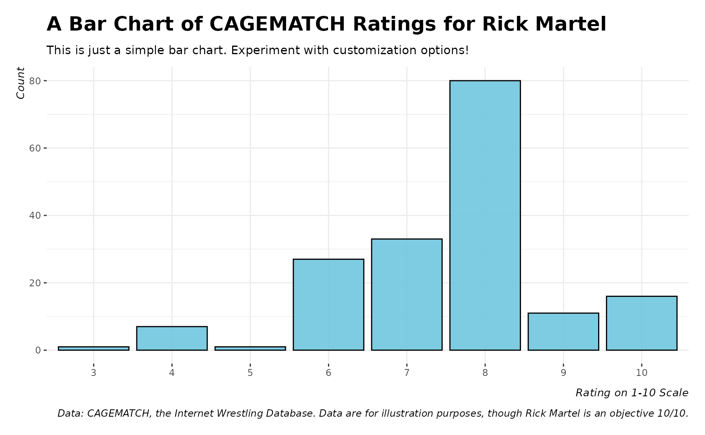

theme_steve() is my default theme framework for graphs I
make with ggplot2. It starts theme_bw(), which is available in
ggplot2, but adjusts the margins and axes a bit to my liking. The end
result is, I think, a lovely template for graphs I make in R.
Arguments
- style
various styles/adjustments to make to the base theme. Must be one of the following: "web" (default), "ms", "fira", "merri", "custom", or "generic". The "custom" style is a fancy way of saying "supply your own fonts". Where "custom" is used in this argument, something must be supplied to the font argument in this same function.
- font
a character vector corresponding with a font that the user ideally has installed on their operating system.
- ...
optional, called for side effects
Value
No return value. Function is used for its side effect, which is to format a plot made in the ggplot2 package.
Details
The best use of this function may involve the fonts you have installed on your system. The user should experiment with various options to see what they like. The "generic" style will use default ggplot2 fonts and is invoked here in this simple function for CRAN testing requirements. The default is "web", which depends on having Open Sans and Titillium Web on the operating system. You will see these two fonts everywhere on my website and most of my R package websites.
For greater clarity, the user should understand "ms" is code for the Crimson Pro font, which resembles the "cochineal" font family in the LaTeX font catalogue. "cochineal" is a fork of the Crimson font and its use is heavily implied by my preferred article template (`article2`) in stevetemplates.
"fira" is shorthand for "Fira Sans". "merri" is shorthand for "Merriweather". The former features prominently in Firefox as well as my current operating system (Pop! OS). The latter incorporates the Merriweather font, which is a close cousin of the Palatino font. Palatino is the implied default font of my first article template (`article`) in stevetemplates.
Examples
library(ggplot2)
# Experiment with options, those this depends on fonts you have installed.
example_plot() + theme_steve(style='generic')
